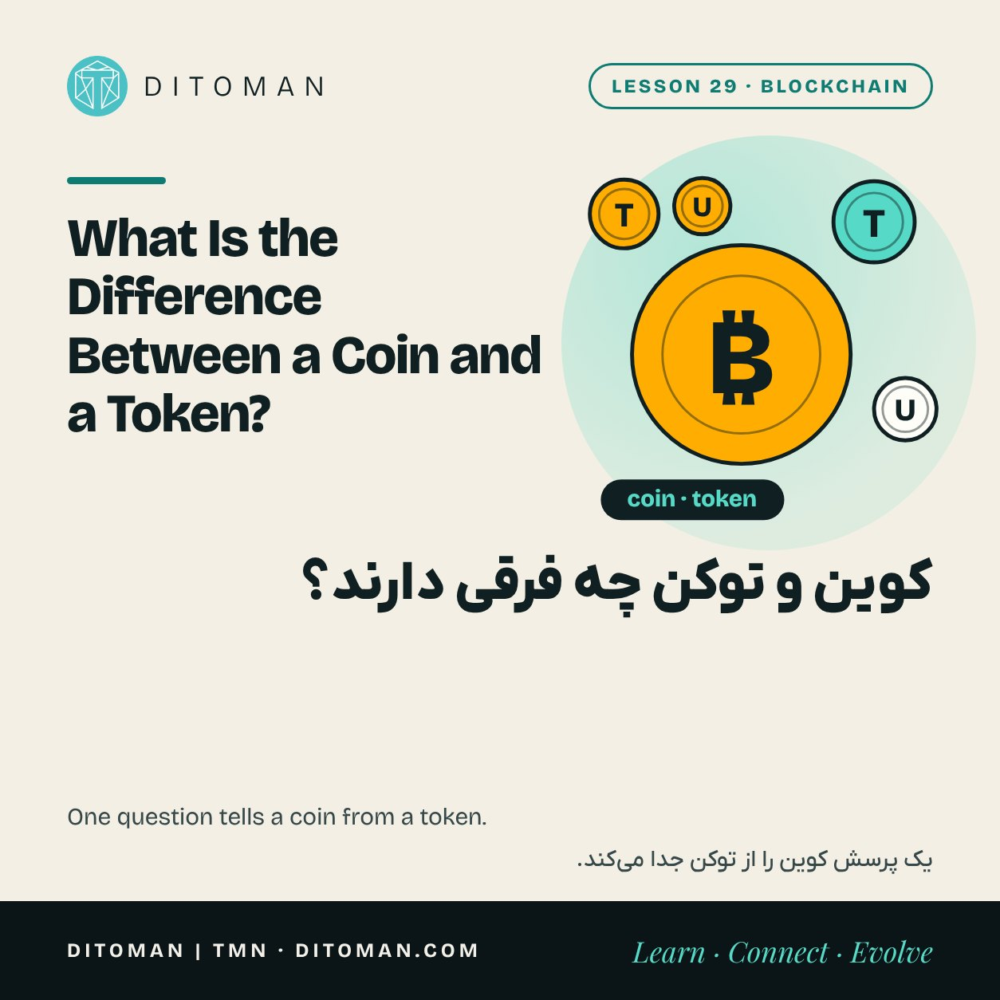

Coin ile token arasındaki fark nedir?
کوین و توکن چه فرقی دارند؟
İnsanlar iki sözcüğü aynıymış gibi kullanır. Aynı değiller. Bu ders basit bir test verir ve TMN'in nereye oturduğu dahil, bunun neden önemli olduğunu gösterir.
مردم دو واژه را مثل هم به کار میبرند، ولی یکی نیستند. این درس یک آزمون ساده میدهد و نشان میدهد چرا مهم است، از جمله جای TMN.
Ders İçeriği
محتوای درس
Dersi İngilizce veya Farsça okuyabilirsiniz.
درس را به فارسی یا انگلیسی بخوانید.
Bir mağazada ülkenin kendi banknotlarıyla ya da mağazanın kendi çıkardığı bir kuponla ödeme yapabilirsiniz. İkisine de günlük konuşmada para denir, ama farklı yerlerde yaşarlar.
Kriptoda da aynı ayrım vardır ve sözcükler coin ile token'dır.
01. Tek satırlık test
Bir coin kendi blok zincirine özgüdür. Bir token başka bir blok zincirinin üzerine kurulur. Kraken'ın rehberi örnekleri verir: BTC ve ETH coin'dir; USDT ve UNI token'dır.
Tek bir soru sorun: bu varlığın kendi zinciri mi var, yoksa başkasının zincirinde mi yaşıyor? Mesele bununla çözülür.
| Sikke | Token | |
|---|---|---|
| Nerede durur | Kendi blok zincirinde | Başka bir blok zincirinde |
| Örnekler | BTC, ETH | USDT, UNI, TMN |
| Kim oluşturur | Zincirin kendi kuralları | Bir akıllı sözleşme |
| Neye bağlıdır | Zincirine | Zincirine ve sözleşmesine |
02. Coin'ler neden vardır
Coin, zincirin kendisinin kullandığı şeydir. Ücretleri öder ve Ders 27'nin gösterdiği gibi çalışmasını sürdürenleri ödüllendirir. Coin olmadan ağın kendi işleyişini ödemenin bir yolu olmazdı.
03. Token'lar nasıl yapılır
Token'lar, Ders 28'deki programlar olan akıllı sözleşmelerle yapılır. Bir geliştirici, bakiyelerin bir listesini ve onları taşımanın kurallarını tutan bir sözleşme yazar. Yeni bir blok zincirine gerek yoktur.
04. Bir standart neden yardımcı olur
Ethereum'un bunun için ERC-20 adında bir standardı vardır; bir biriminin bir diğeriyle değiştirilebilir olduğu fungible token'lar içindir. Standart fonksiyonların ortak adlarını sabitler: ad, sembol, ondalık basamaklar, toplam arz, bir adresin bakiyesi, transfer ve onay (approve) ve transferleri ve onayları kaydeden iki olay.
Uyumlu her token aynı dili konuştuğu için, standardı destekleyen bir cüzdan ya da uygulama özel kod olmadan hepsiyle çalışabilir.
05. Standarttan bir uyarı
ethereum.org, sade bir ERC-20'nin, onları nasıl işleyeceğini bilmeyen bir sözleşmeye gönderilen tokenları kaybedebileceğini belirtir. Token'lar sihir değildir: yanlış bir adrese göndermek yine geri alamayacağınız bir hatadır.
06. Diğer zincirler, benzer standartlar
Diğer zincirlerin kendi sürümleri vardır. BNB Smart Chain, aynı fikri izleyen BEP-20'yi kullanır. Dijital toman olan TMN, bu sitedeki sayfasında anlatıldığı gibi BNB Smart Chain üzerinde bir BEP-20 tokenıdır.
07. Bu fark sizin için neden önemli
Bir coin, zincirinin kendi güvenliğine bağlıdır. Bir token hem zincirine hem de sözleşmesine bağlıdır. Bir varlığın neyin üzerinde durduğunu anlamak, neyin ters gidebileceğini ve onu, varsa, kimin değiştirebileceğini söyler.
Soru hangisinin daha iyi olduğu değil. Hangisini elinizde tuttuğunuzu bilmektir.
Bundan Ne Çıkarmalı
Bir coin kendi blok zincirine özgüdür; bir token başka birinin üzerine kurulur.
BTC ve ETH coin'dir; USDT ve UNI token'dır.
Token'lar akıllı sözleşmelerle oluşturulur, yeni bir zincire gerek yoktur.
ERC-20 ve BEP-20 gibi standartlar cüzdanların birçok tokenla çalışmasını sağlar.
TMN, BNB Smart Chain üzerinde bir BEP-20 tokenıdır.
در یک مغازه میتوانید با اسکناس خود کشور پرداخت کنید یا با کوپنی که خود مغازه صادر کرده. در گفتار روزمره هر دو «پول» نامیده میشوند، ولی در جاهای متفاوتی زندگی میکنند.
در رمزارز هم همین تقسیم هست و واژههایش کوین و توکن است.
۰۱. آزمون یکخطی
کوین بومیِ بلاکچین خودش است. توکن روی بلاکچین دیگری ساخته میشود. راهنمای Kraken مثال میزند: BTC و ETH کویناند؛ USDT و UNI توکن.
یک پرسش بپرسید: این دارایی زنجیرهی خودش را دارد یا روی زنجیرهی دیگری زندگی میکند؟ همین تعیین میکند.
| کوین | توکن | |
|---|---|---|
| کجا زندگی میکند | روی بلاکچین خودش | روی بلاکچین دیگر |
| نمونهها | BTC، ETH | USDT، UNI، TMN |
| ساختهشده توسط | قواعد خود زنجیره | یک قرارداد هوشمند |
| وابسته به | زنجیرهاش | زنجیره و قرارداد خودش |
۰۲. کوینها چرا وجود دارند
کوین چیزی است که خود زنجیره به کار میبرد. کارمزدها را میپردازد و به کسانی که زنجیره را روشن نگه میدارند پاداش میدهد، همانطور که درس ۲۷ نشان داد. بدون کوین شبکه راهی برای پرداخت هزینهی کار خودش نداشت.
۰۳. توکنها چطور ساخته میشوند
توکنها را قراردادهای هوشمند میسازند، همان برنامههای درس ۲۸. توسعهدهنده قراردادی مینویسد که فهرستی از موجودیها و قواعد جابهجاییشان را نگه میدارد. بلاکچین تازهای لازم نیست.
۰۴. چرا استاندارد کمک میکند
اتریوم برای این کار استانداردی دارد به نام ERC-20، برای توکنهای همارز، که در آن هر واحد با واحد دیگر قابلجایگزینی است. استاندارد نامهای مشترک توابع را ثابت میکند: نام، نماد، تعداد ارقام اعشار، عرضهی کل، موجودی یک نشانی، انتقال و تأیید، و دو رویداد که انتقالها و تأییدها را ثبت میکنند.
چون هر توکنِ منطبق همان زبان را حرف میزند، کیف پول یا برنامهای که استاندارد را پشتیبانی کند میتواند بدون کد ویژه با همهشان کار کند.
۰۵. یک هشدار از خود استاندارد
ethereum.org یادآوری میکند ERC-20 ساده میتواند توکنهایی را که به قراردادی فرستاده میشود که نمیداند چطور با آنها کار کند از دست بدهد. توکنها جادو نیستند: فرستادن به نشانی اشتباه هنوز اشتباهی است که برگشت ندارد.
۰۶. زنجیرههای دیگر، استانداردهای مشابه
زنجیرههای دیگر نسخهی خودشان را دارند. BNB Smart Chain از BEP-20 استفاده میکند که همان ایده را دنبال میکند. TMN، تومان دیجیتال، یک توکن BEP-20 روی BNB Smart Chain است، همانطور که در صفحهاش در همین سایت آمده.
۰۷. چرا این فرق برای شما مهم است
کوین به امنیت خود زنجیرهاش وابسته است. توکن هم به زنجیرهاش وابسته است و هم به قراردادش. دانستن اینکه دارایی روی چه چیزی نشسته نشان میدهد چه چیزی میتواند خراب شود و چه کسی، اگر کسی باشد، میتواند تغییرش دهد.
پرسش این نیست که کدام بهتر است. این است که بدانید کدام را در دست دارید.
چه برداشتی کنیم
کوین بومی بلاکچین خودش است؛ توکن روی بلاکچین دیگری ساخته میشود.
BTC و ETH کویناند؛ USDT و UNI توکن.
توکنها را قراردادهای هوشمند میسازند، بدون زنجیرهی تازه.
استانداردهایی مثل ERC-20 و BEP-20 کیف پولها را قادر میکنند با توکنهای بسیار کار کنند.
TMN یک توکن BEP-20 روی BNB Smart Chain است.
Birbirine bağlanan iki ders
دو درس مرتبط
Ders 28, token'ları yapan akıllı sözleşmeleri açıklar. Ders 5, herhangi bir tokena dokunmadan önce onu nasıl kontrol edeceğinizi gösterir.
درس ۲۸ قراردادهای هوشمندی را توضیح میدهد که توکن میسازند. درس ۵ نشان میدهد هر توکن را پیش از دستزدن چطور بررسی کنید.
Temel Kavramlar
مفاهیم کلیدی
- Sikke
- Token
- Yerel varlık
- ERC-20
- BEP-20
- Fungible (değiştirilebilir)
- Cüzdan uyumluluğu
- کوین
- توکن
- دارایی بومی
- ERC-20
- BEP-20
- همارز
- سازگاری با کیف پول
Öğrenme Hedefleri
اهداف یادگیری
- Tek satırlık testi herhangi bir varlığa uygulayın.
- İki coin ve iki token örneği verin.
- Bir tokenin nasıl oluşturulduğunu açıklayın.
- ERC-20 gibi bir standardın neden yardımcı olduğunu söyleyin.
- TMN'i doğru yere yerleştirin.
- آزمون یکخطی را روی هر دارایی به کار ببرید.
- دو مثال کوین و دو مثال توکن بزنید.
- توضیح بدهید توکن چطور ساخته میشود.
- بگویید چرا استانداردی مثل ERC-20 کمک میکند.
- TMN را درست جا بدهید.
Sınav
آزمونک
Aklınızda ne kaldığını kontrol edin. Yanıt her sorunun altında.
ببین چه چیزی در ذهنت مانده. پاسخ زیر هر پرسش آمده است.
Soru 1
پرسش ۱
Hangisi bir coin'dir?
کدام یک کوین است؟
A. ETH
الف. ETH
B. USDT
ب. USDT
C. UNI
ج. UNI
Doğru cevap: A
پاسخ درست: الف
Soru 2
پرسش ۲
Tek satırlık test nedir?
آزمون یکخطی چیست؟
A. Kendi blok zinciri var mı?
الف. آیا بلاکچین خودش را دارد؟
B. Fiyatı yüksek mi?
ب. آیا قیمتش بالاست؟
C. Adı kısa mı?
ج. آیا اسمش کوتاه است؟
Doğru cevap: A
پاسخ درست: الف
Soru 3
پرسش ۳
Bir tokeni ne oluşturur?
چه چیزی توکن میسازد؟
A. Bir akıllı sözleşme
الف. یک قرارداد هوشمند
B. Yeni bir madencilik cihazı
ب. یک دستگاه استخراج تازه
C. Bir merkez bankası
ج. یک بانک مرکزی
Doğru cevap: A
پاسخ درست: الف
Soru 4
پرسش ۴
ERC-20 neyi standartlaştırır?
ERC-20 چه چیزی را استاندارد میکند؟
A. Fungible token'ların ortak fonksiyonlarını
الف. توابع مشترک توکنهای همارز
B. Token fiyatlarını
ب. قیمت توکنها
C. Blok süresini
ج. زمان بلاک
Doğru cevap: A
پاسخ درست: الف
Soru 5
پرسش ۵
TMN hangi standardın ve zincirin tokenıdır?
TMN توکن کدام استاندارد و زنجیره است؟
A. BNB Smart Chain üzerinde BEP-20
الف. BEP-20 روی BNB Smart Chain
B. Bitcoin üzerinde bir coin
ب. یک کوین روی بیتکوین
C. Kendi blok zinciri
ج. بلاکچین مستقل خودش
Doğru cevap: A
پاسخ درست: الف
Kaynaklar
منابع
- Kraken Learn: kripto coin'ler ile token'lar arasındaki fark (BTC ve ETH coin'dir; USDT ve UNI token'dır)
- ethereum.org: ERC-20 token standardı (ortak arayüz, işleyemeyen sözleşmelere gönderilen tokenların riski)
TMN'in standardı ve zinciri bu sitedeki token sayfasını izler. Genel açıklama, yatırım tavsiyesi değil.
استاندارد و زنجیرهی TMN از صفحهی توکن همین سایت گرفته شده. توضیح عمومی است، نه توصیهی سرمایهگذاری.
با هم دنبال میکنیمTakipte kal
Yeni dersler önce Ditoman'ın kanallarında duyurulur.
درسهای تازه اول در کانالهای دیتومان معرفی میشوند.